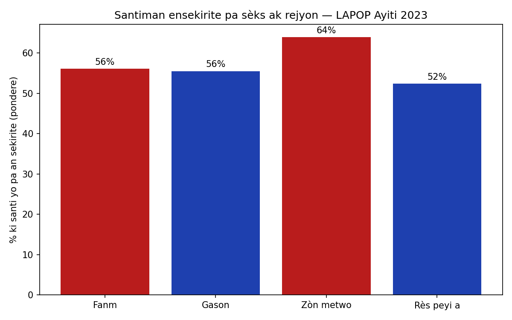
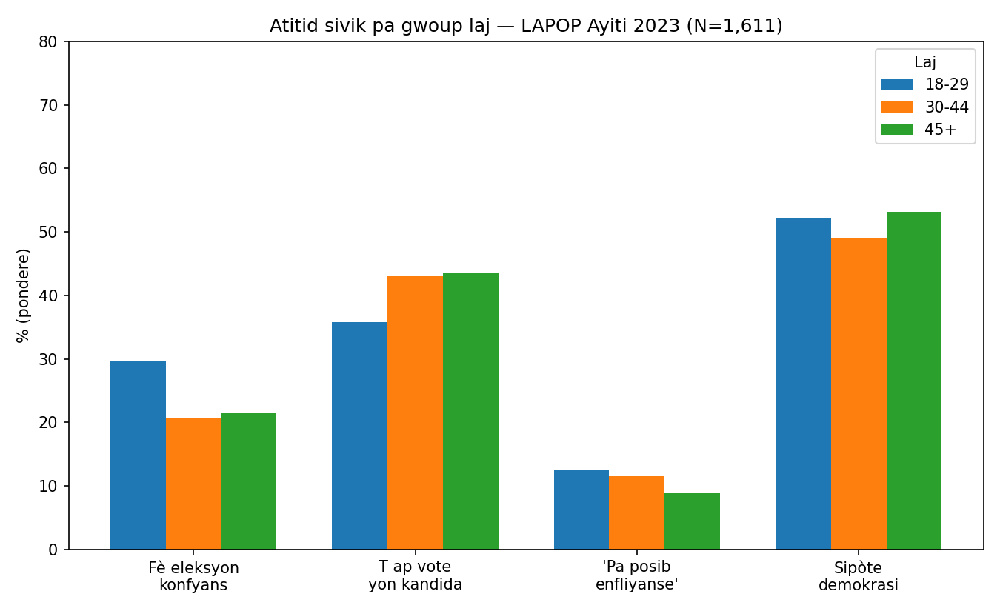
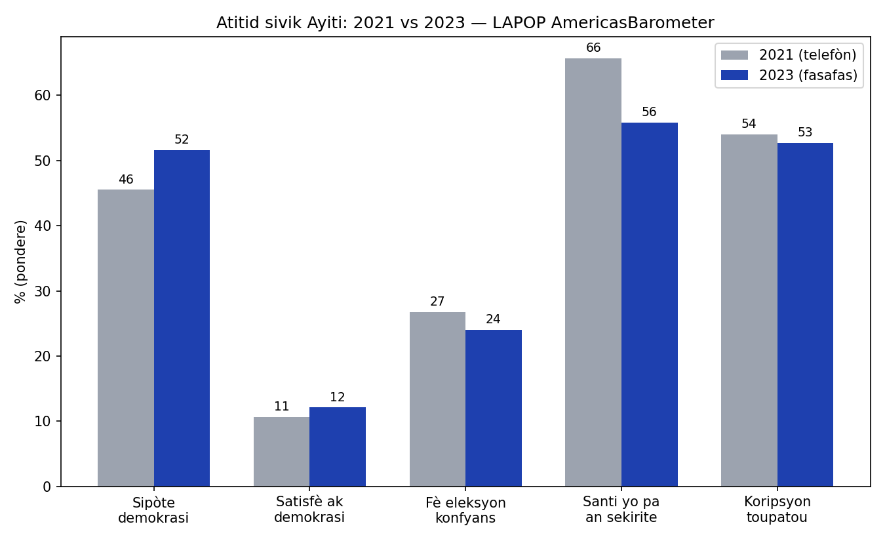

Analiz segondè done LAPOP AmericasBarometer Ayiti (2021 ak 2023) · Pibliye 3 jiyè 2026
Kesyon rechèch nou: kijan santiman sou sijè sitwayen varye selon gwoup demografik? Anvan nou kolekte okenn nouvo done, nou te analize pi bon done ki egziste deja: sondaj AmericasBarometer LAPOP la (Vanderbilt University) — yon echantiyon reprezantatif nasyonal. Nou te itilize done 2023 a (1,611 moun) ak done 2021 an (3,088 moun), ak pwa echantiyon LAPOP yo, entèval konfyans bootstrap, ak yon koreksyon Holm pou tès miltip yo. Rezilta nou yo repwodui chif ofisyèl LAPOP pibliye yo — sa konfime metòd nou an kòrèk.
Mesaj done yo klè: Ayisyen yo pa abandone demokrasi kòm lide — men yo pèdi konfyans nan fason li ap pratike. Epi malgre tout kriz la, se sèlman 11% ki di chanjman enposib. Apeti pou demokrasi a la; se konfyans nan machin nan ki manke.
Nan senk ipotèz nou te fikse davans yo, youn konfime apre koreksyon estatistik: moun k ap viv nan zòn metwopolitèn Pòtoprens la santi yo pa an sekirite apeprè 11.5 pwen poustaj plis pase rès peyi a (p=.03). Yo wè plis koripsyon tou (64% kont 47%). Santiman ensekirite a pa nasyonal menm jan — li konsantre kote gang yo ye a.

Nan done 2023 a, jèn 18-29 lane yo fè eleksyon plis konfyans (29.6%) pase moun 30-44 lane (20.7%) ak moun 45+ (21.5%). Men se menm jèn sa yo ki di mwens ke yo t ap vote pou yon kandida (35.8% kont ~43% pou de lòt gwoup yo). Pou jèn Ayisyen — ki pa janm gen chans vote nan yon eleksyon nasyonal — pwoblèm nan sanble se pa mefyans: se abitid ak koneksyon ki manke.

Atansyon syantifik: modèl sa a pa t parèt an 2021 — ane sa a, se te jèn yo ki te fè eleksyon mwens konfyans (23.5% kont 30% pou 30-44). Kidonk chanjman sa a fèt ant 2021 ak 2023, epi li ka reflete bri estatistik oswa yon vre chanjman jenerasyonèl. Nou trete li kòm yon ipotèz pou konfime — se pa yon konklizyon final — epi nou anrejistre li ofisyèlman kòm ipotèz prensipal pwochen etid nou an.

Sipò pou demokrasi a monte soti 45.5% rive 51.5% (yon ogmantasyon estatistikman siyifikatif, p=.008) — pandan youn nan pi move peryòd nan istwa modèn peyi a. Konfyans nan eleksyon rete stab (27% → 24%). Yon rezilta ki sanble etranj: pousantaj moun ki di yo pa an sekirite a desann (66% → 56%) — men nou pa kwè sa vle di sekirite a amelyore.
Limit enpòtan: sondaj 2021 an te fèt nan telefòn (peryòd COVID, anvan asasinay prezidan an), men sondaj 2023 a te fèt fasafas — epi ankèt fasafas pa ka antre nan zòn ki pi danjere yo. Kidonk bès nan santiman ensekirite a ka reflete KI MOUN ki te ka reponn, olye de yon vre amelyorasyon. Nou di sa klè paske rechèch onèt mande pou nou montre feblès done nou yo menm jan nou montre fòs yo.
Done: LAPOP AmericasBarometer Ayiti 2023 (N=1,611, fasafas) ak 2021 (N=3,088, telefòn), ak pwa echantiyon ofisyèl yo. Kèk kesyon te poze sèlman a mwatye echantiyon an (n≈570-780). Tout estimasyon yo pondere; entèval konfyans yo kalkile ak bootstrap stratifye (1,000 repetisyon); nou te fikse 5 ipotèz davans epi korije pou tès miltip ak metòd Holm. Nou pa ka repibliye done brit LAPOP yo (kondisyon lisans), men tout rezilta agrege nou yo ak metòd nou yo dekri isit la, epi kòd analiz nou an disponib sou demann: research@ayitisitwayen.org.